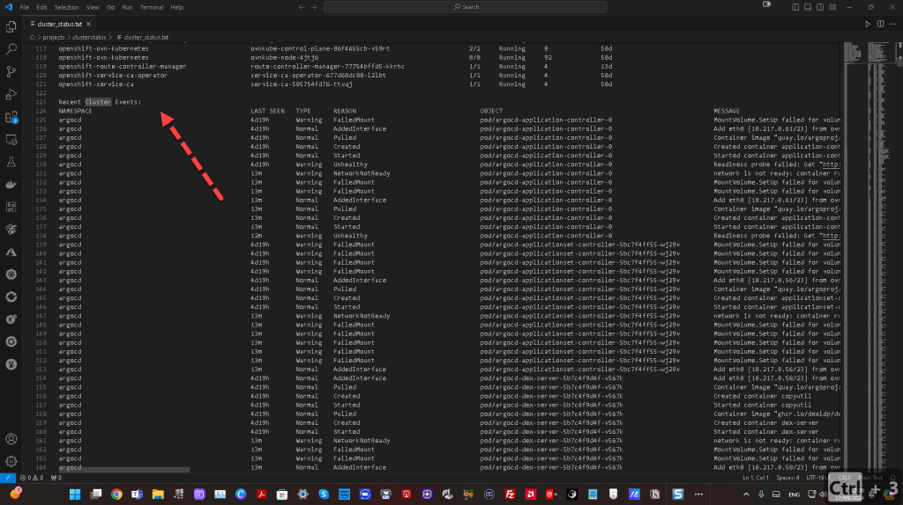
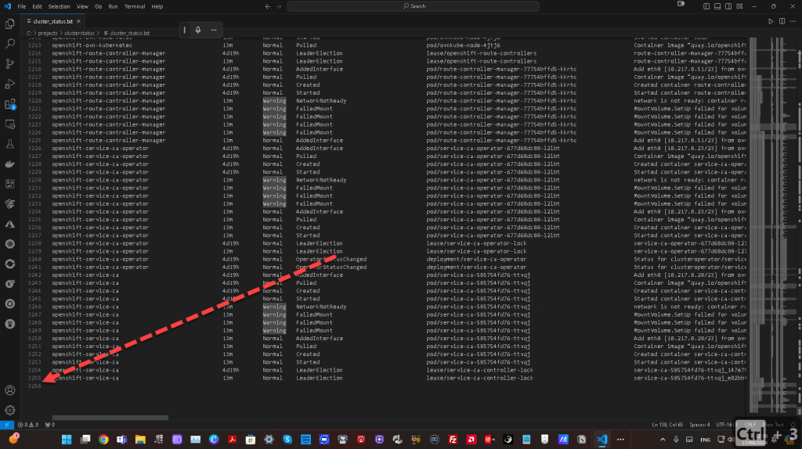
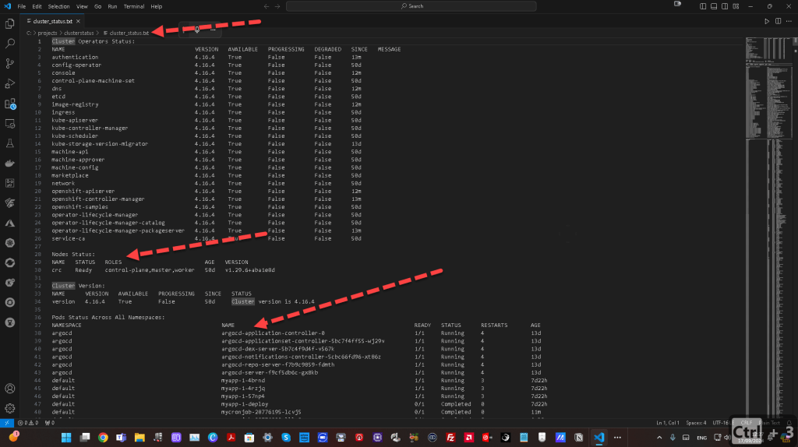

🚀 Writing OpenShift CLI Output to a File Using PowerShell


🚀 Writing OpenShift CLI Output to a File Using PowerShell
Managing your OpenShift cluster through the CLI can be a powerful way to keep tabs on your infrastructure's health. Sometimes, though, you need to save that information for future reference or to share it with your team. In this post, I'll show you how to run key OpenShift CLI commands in PowerShell and write the output to a file in just a few steps.
💡 What You Want to Achieve
The goal is simple: capture important OpenShift cluster health status info in a text file. We will use several oc commands and PowerShell's Out-File command to accomplish this. Here's the full breakdown.
🛠️ The Command
To write the output of several key OpenShift health check commands to a file named cluster_status.txt, you can use the following PowerShell one-liner:
echo "Cluster Operators Status:" | Out-File -FilePath "cluster_status.txt"; oc get clusteroperators | Out-File -Append -FilePath "cluster_status.txt"; echo "nNodes Status:" | Out-File -Append -FilePath "cluster_status.txt"; oc get nodes | Out-File -Append -FilePath "cluster_status.txt"; echo "nCluster Version:" | Out-File -Append -FilePath "cluster_status.txt"; oc get clusterversion | Out-File -Append -FilePath "cluster_status.txt"; echo "nPods Status Across All Namespaces:" | Out-File -Append -FilePath "cluster_status.txt"; oc get pods --all-namespaces | Out-File -Append -FilePath "cluster_status.txt"; echo "nRecent Cluster Events:" | Out-File -Append -FilePath "cluster_status.txt"; oc get events --all-namespaces | Out-File -Append -FilePath "cluster_status.txt"

With this command, you'll:
-
Echo Section Headers: Add descriptive headers like "Cluster Operators Status," "Nodes Status," etc., to your output file for clarity.
-
Run OpenShift Commands: Commands like
oc get clusteroperatorswill grab the relevant data about the health of your cluster. -
Append Results to a File: Each section is appended to the file
cluster_status.txtin your current working directory.
🚀 Step-by-Step Breakdown
-
Start with Section Headers:
We start by echoing headers likeCluster Operators Status,Nodes Status, etc., which are then written into the file using PowerShell’sOut-Filecommand. -
Run OpenShift Commands:
Next, the OpenShift CLI (oc) commands fetch the current status of various components (cluster operators, nodes, versions, etc.). This output is appended to the same file usingOut-File -Append. -
View the Results:
You can open thecluster_status.txtfile in any text editor to review the full health status of your OpenShift cluster.
✨ Why This Is Useful
💼 For Monitoring: You can run this command periodically to maintain a historical record of your cluster’s health.
👨💻 For Debugging: When troubleshooting, you might want to share this file with a colleague or save it as a reference for later investigations.
📊 For Reporting: Collecting the output of key cluster health metrics can help in preparing reports for management or audit purposes.
🔗 Connect with Me
Let’s keep the conversation going! You can find me on these platforms:
This guide makes it easy to collect and store OpenShift cluster data using just a single PowerShell line. Don't forget to try it out and share your experience! 💡
Imported from rifaterdemsahin.com · 2025